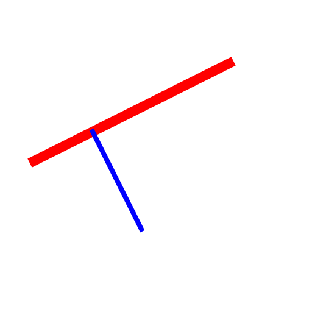

Parallel (with Distance)
Toolbar / Icon:


Menu: Draw - Line - Parallel (with Distance)
Shortcuts: L, P | P, A | O, F
Commands: lineparallel | lineoffset | offset | o | parallel | par | lp | pa | of
Description:
With this tool you can create parallels to existing lines (or concentric arcs
and circles).
Procedure:
- Enter the distance of the concentric or parallel entity from the original
entity in the options tool bar shown at the top.
- Enter the number of parallel or concentric entities to create in the
options tool bar.
- Click the base entity. The parallel or concentric entities are created on
that side on which the mouse cursor is located while selecting the
entity.